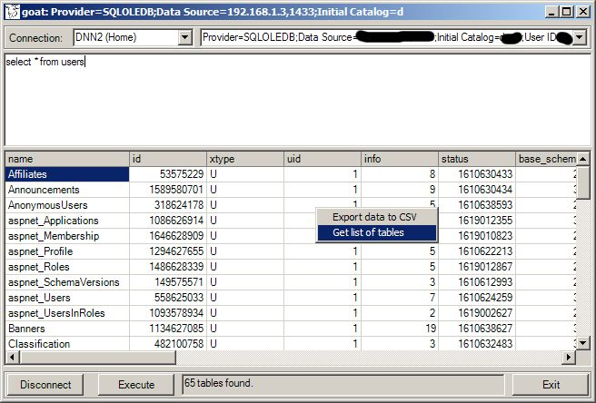
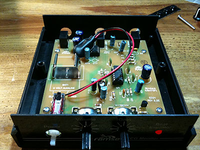
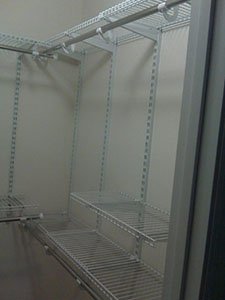

Note: Unless otherwise noted all software is the property of Vincent Lee Arter, Jr. and you must obtain written permission from me in order to use and / or distribute any of my software.
Software Projects
Yes, I dabble in software projects. Here are just a few of the software projects I've done over the past few years.
GOAT - Generic Oracle™ Access Tool (C#)
The goal of GOAT was to provide data managers with mixed database permissions the ability to safely query Oracle™ (or other RDBMs systems) without having to worry about accidentally executing updates. I wanted to manage rights with permissions but since some data managers needed full CRUD rights with custom GUI editors, but not for direct querying, I wrote a simple tool that could be used for data managers with this need. At its peak on freeware channels it had over 300 downloads. Now it is in the history books.
SGP - Spore™ Game Packager (C#)
Spore™ was a great game (still is!). In the early days of Spore™ there was no way to syncronize your data between machines )if you played on multiple machines). I wrote SGP to package up all of the relevant data and sync it between machines. It was a fun little project that saw about three dozen users over its life.
I really wish I had a screenshot of this app. It was really cool looking. The source cannot be built at this time because a library I used is no longer available (remember that lesson when choosing OSS libraries).
Other Software Projects
This is just a partial list of the dozens of my "dead" software projects...
- Service Control - Automation for starting / stopping Windows Services (AutoIt)
- ProtoNotes - A simple daily diary organized by dates. (C++)
- SuperBarX - A "super utility bar" for Windows 2000 and XP. (C++)
- TextFinder - Accelerate text file search utility with RegEx (C++)
- dict - A Mac style dictionary for Windows (used reference.com) (C#)
- JDepends - Java class dependency checker and packager (Java)
- Many, many, more...
Hardware Projects
More dangerous than software projects yet still fun!
ECG/EKG
Initially built from scratch and then I bought a kit to finish. It actually works but isn't very accurate. And no it didn't kill me... yet.
Bedroom Closet Project
OK. I have to admit... I wanted to show two "hardware" projects but I just didn't have many pics of my other electronic disasters... I mean projects handy. So here's a shot of the closet we re-built!
Other Hardware Projects
This is just a partial list "dead" or "pending" hardware projects...
- Guitar Stomp Boxes - Working on making my own "cloned" stomp boxes
- REALLY Programmable Thermostat - DEAD. Nest beat me to it and is way cool!
- Camera Control - Ancient project to automatically snap pictures with computer controlled SLR cameras
- Many, many, more...